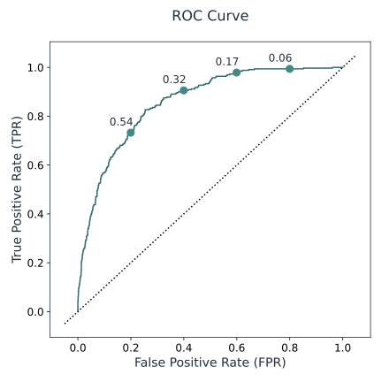

Below we provide figures and example predictions to help assess the performance of your solution.
The figures are generated based on the prediction and labels from the validation dataset.
|  | This figure shows the receiver operating characteristic curve (ROC), which can be computed for models that output probabilities. It is created by plotting the true positive rate (TPR) vs the false positive rate (FPR) at various threshold settings. The annotated green points show the corresponding FPR-TPR combinations for specific threshold values. Here, the threshold probability applies to the probability of the positive class (i.e. samples are positive for positive class probabilities above the threshold). The dotted line shows the ROC Curve for a random classifier. |
For the following 10 samples, the table below lists the predicted probabilities. Note that categories are lexicographically sorted (see the 'Info' tab for the list of categories) and that the probabilities may not add up to 1 due to rounding errors:
| Label | Prediction | gender | has_dependents | has_device_protection | has_multiple_lines | has_online_backup | has_online_security | has_paperless_billing | has_partner | has_phone_service | has_streaming_movies | has_streaming_ts | has_tech_support | monthly_charges | senior_citizen | tenure_months | total_charges | type_of_contract | type_of_internet_service | type_of_payment_method |
|---|---|---|---|---|---|---|---|---|---|---|---|---|---|---|---|---|---|---|---|---|
| Yes | [0.4403, 0.5597] | Male | No | No | No | Yes | Yes | Yes | No | Yes | No | No | No | 53.85 | 0 | 2 | 108.15 | Month-to-month | DSL | Mailed check |
| No | [0.9340, 0.0660] | Male | No | Yes | No phone service | No | Yes | No | No | No | No | No | Yes | 42.3 | 0 | 45 | 1840.75 | One year | DSL | Bank transfer (automatic) |
| Yes | [0.2741, 0.7259] | Female | No | Yes | Yes | No | No | Yes | Yes | Yes | Yes | Yes | Yes | 104.8 | 0 | 28 | 3046.05 | Month-to-month | Fiber optic | Electronic check |
| No | [0.4224, 0.5776] | Male | No | Yes | No | No | Yes | Yes | No | Yes | Yes | Yes | Yes | 105.5 | 0 | 25 | 2686.05 | Month-to-month | Fiber optic | Electronic check |
| No | [0.9506, 0.0494] | Female | No | No internet service | No | No internet service | No internet service | No | No | Yes | No internet service | No internet service | No internet service | 20.65 | 0 | 52 | 1022.95 | One year | No | Mailed check |
| No | [0.8181, 0.1819] | Male | Yes | Yes | Yes | No | Yes | No | No | Yes | Yes | Yes | No | 106.7 | 0 | 71 | 7382.25 | Two year | Fiber optic | Bank transfer (automatic) |
| Yes | [0.3623, 0.6377] | Male | No | No internet service | No | No internet service | No internet service | No | No | Yes | No internet service | No internet service | No internet service | 20.15 | 0 | 1 | 20.15 | Month-to-month | No | Mailed check |
| No | [0.9195, 0.0805] | Female | No | No | Yes | Yes | No | Yes | Yes | Yes | No | No | Yes | 59.9 | 0 | 58 | 3505.1 | Two year | DSL | Credit card (automatic) |
| Yes | [0.3174, 0.6826] | Male | Yes | No | No phone service | Yes | No | No | Yes | No | No | No | No | 30.2 | 0 | 1 | 30.2 | Month-to-month | DSL | Electronic check |
| No | [0.8667, 0.1333] | Female | Yes | Yes | No | Yes | Yes | No | Yes | Yes | No | No | Yes | 66.15 | 0 | 27 | 1874.45 | One year | DSL | Mailed check |